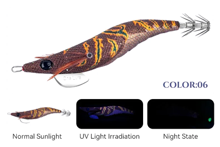

Egis Low Cost
Inicio
Señuelos
YAMASHITA
DTD
YO-ZURI
LETOYO
KINGDOM
SQUID KING
OTROS
Componentes
Color Egis
Acerca de
KINGDOM EGI-06 – Análisis técnico (Color 06)

✅ Color oscuro y técnico. Perfecto para calamares desconfiados y pesca fina.
🎨 Características
Color base:
Marrón oscuro con zonas negras y reflejos anaranjados apagados.
Patrón:
Tiger discreto, visible de cerca pero poco agresivo a distancia.
Respuesta UV:
Respuesta UV moderada, perceptible sin romper el perfil oscuro.
Glow:
Glow muy contenido, apenas visible, pensado para no alertar.
Acabado:
Textil mate con brillo mínimo, orientado al máximo realismo.
🌤️ Condiciones ideales de uso
🌊
Aguas claras:
Excelente rendimiento gracias a su perfil natural.
🌙
Noche con luna o luz ambiente:
Funciona muy bien sin sobresalir en exceso.
🪨
Fondos oscuros o rocosos:
Se integra perfectamente con el entorno.
☀️
Días soleados:
Ideal cuando los colores vivos fallan.
🌫️
Aguas turbias:
Puede quedarse corto frente a colores más agresivos.
🧠 Comportamiento esperado
👉 Egi técnico para pesca lenta y precisa.
👉 Muy eficaz con calamares recelosos o muy presionados.
👉 Ideal para segundas pasadas tras un color agresivo.
👉 Funciona mejor con calamares pasivos.
⚙️ Resumen práctico
Condición
Eficiencia
🌊 Agua clara
🟢🟢 Muy alta
🌙🌔 Noche con luz
🟢🟢 Muy alta
☀️ Día soleado
🟢 Alta
🦑😴 Calamares pasivos
🟢🟢 Muy alta
🦑🔥 Calamares activos
🟡 Media
🛒 Comprar en AliExpress